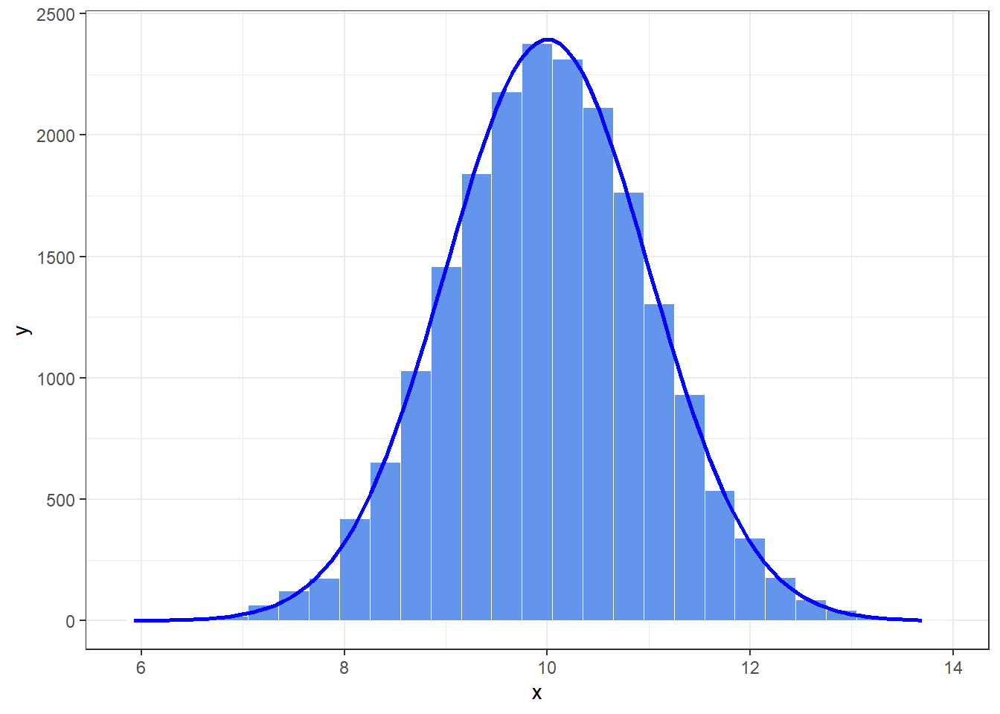

Chapter 2 Basic statistical concepts
As researchers, we are interested in finding results that apply to an entire population of people or things. Scientists rarely, if ever, have access to every member of a population. Therefore, we collect data from a small subset of the population (known as a sample) and use these data to infer things about the populaation as a whole. The bigger the sample, the more likely it is to reflect the whole population. If we take several random samples from the population, each of these samples will give us slightly different results. However, on average, large samples should be fairly similar.
2.1 Simple statistical models
2.1.1 The mean: a very simple statistical model
The mean is a statistical model of the data because it is a hypothetical value that doesn’t have to be a value that is actually observed in the data. As such, the mean is a model created to summarize our data.
2.1.2 Asessing the fit of the mean: sums f squares, variance and standard deviations
With any statistical model we have to assess the fit. With most statistical models we can determine whether the model is accurate by looking at how different our real data are from the model that we have created. The easiest way to do this is to look at the difference between the data we observed and the model fitted. The easiest way to do this is to look at the differencee between the data we observed and the model fitted.
How can we use deviances to estimate the accuracy of a model? One possibility is to add up the deviances (this would give us an estimate of the total error). If we were to do this, we would find that:
\[\sum(x_{i}-\overline{x})=0\] So, in effect the result tells us that there is no total error between our model and the observed data, so t he mean is a perfect representation of the data. Now this clearly isn’t true: there were error but some of them were positive, some were negative and they have simply cancelled each other out. It is clear that we need to avoid the problem of which direction the error is in and one mathematical way to do this is to square each error, that is multiply each error by itself. So, rather than calculating the sum of errores, we calculate the sum of squared errors: \[\sum(x_{i}-\overline{x})(x_{i}-\overline{x})=0\] The sum of squared errors (SS) is a good measure of the accuracy of our model. However, it is fairly bvious that the sum of squared errrs is dependent upon the amount of data that has been cllected - the mor data points, the higher the SS. T overcome this problem, we calculate the average error by dividing the SS by the number of observations (N). If we are interested only in the average error for the sample, then we can divide by N alone. However, we are generally interested in using the error in the sample to estimate the error in the population and so we divide the SS by the number of observations minus 1. This measure is know as the variance and is a measure that we will come across a great deal: \[variance(s^2)=\frac{SS}{N-1}=\frac{\sum(x_{i}-\overline{x})^2}{N-1}\] #### Degrees of freedom
Degrees of freedom refer to the number of values in a calculation that are free to vary without affecting the outcome of the calculation. For example, let’s say you have a sample of 10 numbers and you want to calculate the sample variance. To do this, you need to subtract the mean of the sample from each individual number, square those differences, add them up, and divide by the number of degrees of freedom.
The number of degrees of freedom in this calculation is \(N-1\), where N is the sample size. In other words, you have 9 degrees of freedom because once you have calculated the mean of the sample, you only have 9 numbers that can vary freely, since the sum of all the numbers in the sample must be fixed.
Degrees of freedom are important because they affect the precision of statistical estimates. When there are fewer degrees of freedom, there is less information available to make an accurate estimate, so statistical tests and confidence intervals become less reliable.
The variance is, therefore, the average error between the mean and the observations made. There is one problem with the variance as a measure: it gives us a measure in units squared (because we squared each error in the calculation). That is why we take the square root of the variance, this measure is know as the standard deviation:
\[s=\sqrt{\frac{\sum(x_{i}-\overline{x})^2}{N-1}}\] The sum of squares, variance and standard deviation are all, therefore, measures of the fit (how well the mean represents the data). Small standard deviations indicate that data points are close to the mean. A large standard deviation indicates that the data points are distant from the mean (the mean is not an accurate representation of the data). A standard deviation of 0 would mean that all of the scores were the same.
It is also worth noting that the variance and standard deviation also tell us about the shape of the distribution of scores, as the standard deviation gets larger, the distribution gets fatter, a small standard deviation relative to the mean results in a more pointy distribution in which scores close to the mean are very frequent.
2.1.2.1 Expressing the mean as a model
Everything in statistics essentially boils down to one quation:
\[outcome_{i}=model+error_{i}\] This just means that the data we observe can be predicted from the model we choose to fit to the data plus some amount of error. You will discover taht most things ultimately boil down to this one simple idea!
Likewise, the variance and standard deviation illustrate another fundamental concept: how the goodness of fit of a model can be measured. If we are looking at how well a model fits the data the we generally look at deviation from the model, we look at the summ of squared error, and in general terms we can write this:
\[deviation=\sum (observed-model)^2\] We assess models by comparing the data we observe to the model we have fitted to the data, and then square these differences.
2.2 Going beyond the data
2.2.1 The standard error
Many students get confused about the difference between the santard deviation and the standard error. We have explained before that scientist use samples as a way of estimating the behaviour in a population. When someone takes a sample from a population, they are taking one of many possible samples. If we were to take several samples from t he same population, then each sample has its own mean, and some of these sample means will be different.
Samples will vary because they contain different members of the population, this is known as sampling variation. We can actually plot the sample means as a frequency distribution, or histogram. The end result is a nice symmetrical distribution known as a sampling distribution. A sampling distribution is simply the frequency distribution of sample means (it doesn’t have to be means, it can be any statistic that you are trying to estimate). The sampling distrbution tells us about the behaviour of samples from t he population and you will notice that it is centred at the same value as the mean of the population. This means that, if we took the average of all sample means we’d get the value of the population mean. Now,if the average of the sample means is the same value as the population mean, then if we knew the accuracy of that average we’d know something about how likely it is that a given sample is representative of the population. So how do we determine the accuracy of the population mean?
We used the standard deviation as a measure of how represtantive the mean was of the observed rdata. Small standard deviations represented a scenario in which most data points were close to the mean, a large standard deviation represented a situation in which data points were widely spread from the team. If you were to calculate the standard deviation between sample means then this too would give you a mesaure of how much variablity there was between the means of different samples. The standard deviation of sample means is know as the standard error of the mean (SE). Therefore, the standard error could be calculated by taking the difference between each sample mean and the overall mean, squaring these difference, adding them up and then dividngby the number of samples. Finally, the square root of this value would need to be taken t get the standard deviation of sample means, the standard error.
Of course, in reality we cannot collect hundreds of samples and so we rely on approximations of the standard error. Clever staticians have demonstrated that as samples get large (usually defined as greater than 30) the sampling distribution has a normal distribution with a mean equal to the population mean, and a standard deviation of:
\[SE=\sigma_{\overline{X}}=\frac{s}{\sqrt{N}}\] The standard error of the mean (SE) is a measure of the variability of the sample mean, which is an estimate of the population mean. It is calculated as the standard deviation of the sample divided by the square root of the sample size.
The SE is important because it tells us how much the sample mean is likely to differ from the true population mean. A smaller SEM indicates that the sample mean is a more precise estimate of the population mean.
The SE is commonly used in inferential statistics to calculate confidence intervals and to determine the statistical significance of differences between sample means.
This is known as the central limit theorem and it is useful in this context because it means that if our sample is large we can use the above euqation to approximate the santard error (because, remember, it is the standard deviation of the sampling distribution). When the sample is relatively small (fewer than 30) the sampling distribution has a different shape, known as a t-distribution, which we will come later.
The standard error is the standard deviation of sample means. As such, it is a measure of how representative a sample is likely to be of the population. A large standard error means that there is a lot of variablity between the means of different samples and so the sample we have might not be representative f the population. A small standard error indicates that most sample means are similar to the population mean and so our sample is likely to be an accurate reflection of the population.
2.3 Confidence intervals
2.3.1 Calculating confidence intervals
A different approach to assesing the accuracy of the sample mean as an estimate of the mean in the population is to calculate boundaries within which we believe the true value of the mean will fall. Such boundaries are called confidence intervals.
The basic idea behind confidence intervals is to construct a range of value within which we think the population value falls.
Before we construct confidence intervals, we first have to note that the sample means are different from the true mean (because of sampling variation, as described before). Second, although most of the intervals do contain the true mean, a few do not.
We calculate them so that they contain certain properties: they tell us the likelihood that they contain t he true value of the thing we are trying to estimate (in this case, the mean). Tipically we look at 95% confidence intervals and sometimes 99% confidence intervals, but they all have a similar interpretation: they are limits constructed such that for a certain percentage of th time (95% or 99%) the true value of the population mean will fall within these limits. So when you see a 95% confidence interval for a mean, think of it like this: if we0d collected 100 samples, calculated the mean and then calculated a confidence intervals we constructed would contain the true value of the mean in the population.
To calculate the confidence interval, we need to know the limits within which 95% of means will fall. Remember that 1.96 was an important value of z (a score from a normal distribution with a mean of 0 and standard deviation of 1) because 95% of z-scores fall between -1.96 and 1.96. Luckily we know from the central limit theorem that in large samples (above about 30) the sampling distribution will be normally distributed. Our mean and standard deviation are unlikely to be 0 and 1; except not really because, as you might remember, we can convert scores so that they do have a mean of 0 and standard deviation of 1 (z-scores):
\[z=\frac{X-\overline{X}}{s}\] If we know that our limits are -1.96 and 1.96 in z-scores, then to find out the corresponding scores in our raw data we can replace z in the equation: \[1.96=\frac{X-\overline{X}}{s}\] \[-1.96=\frac{X-\overline{X}}{s}\] We rearrange these equation to discover the value of X: \[(1.96*s)+\overline{X}=X\] \[(-1.96*s)+\overline{X}=X\] Therefore, the confidence interval can easily be calculated once the standard deviation and mean are known. However, we use the standard error and not the standard deviation because we are interested in the variability of sample means, not the variability within the sample:
\[lower~boundary=\overline{X}-(1.96*SE)\] \[upper~boundary=\overline{X}+(1.96*SE)\] As such, the mean is always in the centre of the confidence interval. If the mean represents the true mean well, then the confidence interval of that mean should be small. If the interval is small, the sample mean must be very close to the true mean. If the confidence interval is very wide then the sample mean could be very different from the true mean, indicating that it is a bad representation of the population.
2.3.2 Calculating other confidence intervals
In general, we could say that confidence intervals are calculated as: \[lower~boundary=\overline{X}-(z_{\frac{1-p}{2}}*SE)\] \[upper~boundary=\overline{X}+(z_{\frac{1-p}{2}}*SE)\] in which p is the probability value for the confidence interval. So, if you want a 95% confidence interval, then you want t he value of \(z_{\frac{1-0.95}{2}}=0.025\), we have to look for this value in the table of the standard normal distribution.
2.3.3 Calculating confidence intervals in small samples
For small samples, the sampling distribution is not normal, it has a t-distribution. The t-distribution is a family of probabilityt distributions that change shape as the sample size gets bigger (when the sample is very big, it has the shape of a normal distribution). To construct a confidence interval in a small sample we use the same principle as before but instead of using the value for z we use the value for t:
\[lower~boundary=\overline{X}-(t_{n-1}*SE)\] \[upper~boundary=\overline{X}+(t_{n-1}*SE)\] The \(n-1\) in the equations is the degrees of freedom and tells us which of the t-distributions to use. For a 95% confidence interval we find the value of t for a tw-tailed test with probability of .05 (5%), for the appropiate degrees of freedom.
A confidence interval for the mean is a range of scores constructed such that the population mean will fall within this range in 95% of samples. The confidence interval is not an interval within which we are 95% confident that the population mean will fall.
2.4 Test statistics
We can test whether our statistical models (and therefore our hypotheses) are significant fits of the data we collected. To do this, we need to see the concepts of systematic and unsystematic variation. Systematic variation is variation that can be explained by the model that we’ve fitted to the data (and therefore, due to the hthe hypothesis that we’re testing). Unsystematic variation is variation that cannot be explained by the model that we’ve fitted. In other words, it is error, or variation not attributable to the effect we’re investigating. The simplest way to test whether the model fits the data, or whether our hypothesis is a good explanation of the data we have observed is to compare the systematic variation against the unsystematic variation. In doing so we compare how good the model/hypothesis is at explaining the data against how bad it is (the error):
\[test~statistic=\frac{variance~explained~by~the~model}{variance~not~explained~by~the~model}=\frac{effect}{error}\]
This ratio of systematic to unsystematic variance or effect to error is a test statistic, and you’ll discover later in the book there are lots of them: t, F and \(\chi2\) to name only three. The exact form of the equation changes depending on which test statistic you’re calculating, but the important thing to remember is that they all represent the same thing: the amount of variance explained by the model we’ve fitted to the data compared to the variance that can’t be explained by the model.
The reason why this ratio is so useful is intuitive really: if our model is good then we’d expect it to be able to explain more variance that it can’t explain. In this case, the test statistic will be greater than 1 (but no necessarily significant).
A test statistic is a statistic that has known properties; specifically, we know how frequently different values of this statistic occur. This allows us to establish how likely it would be that we would get a test statistic of a certain size if there were no effect (i.e., the null hypothesis were true).
We know their distributions and this allows us, once we’ve calculated the test statistic, to discover the prbability of having found a value as big as we have. The more variation our model explains (compared to the variance it can’t explain), the bigger the test statistic will be, and the more unlikely it is to occur by chance. So, as test statistics get bigger, the probability of them ocurring becomes smaller. When this probability falls below .05 (Fisher’s criterion), we accept this as giving us enough confidence to assume that the test statistic is as large as it is because our model explains a sufficient amount of variation to reflect what’s genuinely happening in the real world (the population).
A significance level of 0.05 (also known as alpha level or level of significance) is commonly used in hypothesis testing. This means that the probability of obtaining a test statistic as extreme or more extreme than the one observed, assuming the null hypothesis is true, is less than 5%. If the test statistic falls below this level, it is considered statistically significant and the null hypothesis is rejected.
The significance level of 0.05 is chosen because it provides a balance between making correct rejections of the null hypothesis (i.e., avoiding type II errors) and avoiding false rejections of the null hypothesis (i.e., avoiding type I errors). Type I error occurs when the null hypothesis is rejected when it is actually true. Type II error occurs when the null hypothesis is not rejected when it is actually false. The level of 0.05 ensures that the probability of making a type I error is controlled at 5%.
In summary, a significance level of 0.05 is important because it provides a standard threshold for determining whether a result is statistically significant, and helps to balance the trade-off between making correct rejections of the null hypothesis and avoiding false rejections.
Given that the statistical model thatt we fit to the data reflects the hypothesis that we set out to test, then a significant test statistic tells us that the model would be unlikely to fit this well if there was no effect in the population (i.e., the null hypothesis was true). Therefore, we can reject our null hpyothesis and gain confidence that the alternative hypothesis is true (but, remember, we don’t accept it).
## One and two-tailed test Hypotheses can be directional or non-directional. A statistical model that test a directional hypothesis is called a one-tailed test (i.e. the more someone reads this book, the more they want to kill its author), whereas one testing a non-directional hypothesis (i.e. reading more of this book could increase or decrease the reader’s desire to kill its author) is known as a two-tailed test.

2.5 Type I and Type II errors
A Type I error occurs when we believe that there is a genuine effect in our population, when in fact there isn’t. If we use Fisher’s criterion then the probability of this error is .05 (or 5%) when there is no effect in the population - this value is known as the \(\alpha -level\). Assuming there is no effect in ur population, if we replicated our data collection 100 times we could expect that on five occasions we would obtain a test statistic large enough to make us think that there was a genuine effect in the population even thought there isn’t. The opposite is a Type II error which occurs when we believe that there is no effect int he population when, in reality, there is. The maximum acceptable probability of a Type II error would be .2 (or 20%) - this is called the \(\beta -level\).
2.6 Effect sizes
Just because a test statistic is significant doesn’t mean that the effect it measures is meaningful or important. The solution is to to measure the size of the effect that we’re testing in a standardized way. The fact that the measure is standardized just means that we can compare effect sizes across different studies that have measured different variables, or have used different scales of measurement.
Many measures of effect size have been proposed, the most common of which are Cohen’s d, Pearon’s correlation coefficient r and the odds ratio.
Effect sizes are useful because they provide an objective measure of the importance of an effect. Cohen has also made some widely used suggestions about what constitutes a large or small effect:
- \(r=.10\) (small effect): The effect explains 1% of the total variance.
- \(r=.30\) (medium effect): The effect explains 9% of the total variance.
- \(r=.50\) (large effect): The effect explains 25% of the total variance.